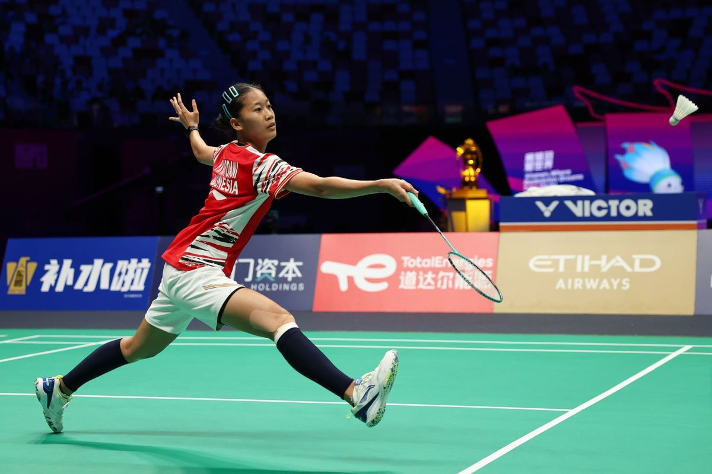

.jpg)
Hasil Undian Kualifikasi Piala Asia U23 2026: Korsel Gerak Cepat, PSSI Harus Waspada

Timnas U23 Indonesia tergabung dalam satu grup dengan Korea Selatan di Kualifikasi Piala Asia U23 2026. PSSI perlu waspada terhadap langkah cepat Korea Selatan yang menjadi salah satu lawan tangguh bagi timnas U23 Indonesia. Garuda Muda akan menjadi tuan rumah dalam kualifikasi yang dijadwalkan pada bulan September mendatang.
klik disiniPutri KW Terhenti di Perempat Final

Tunggal putri Indonesia, Putri Kusuma Wardani, terhenti di babak perempat final Malaysia Masters 2025 usai dikalahkan wakil China. Putri Kusuma Wardani meladeni Han Yue di Axiata Arena, Kuala Lumpur, pada Jumat (23/5/2025). Tiket ke semifinal Malaysia Masters 2025 tak bisa diamankan Putri KW usai kalah dua set langsung melawan Han Yue. Partai Putri KW vs Han Yue tuntas dalam 33 menit dengan skor 12-21 dan 13-21..
klik disiniPersija Jakarta Resmi Perkenalkan Mauricio Souza sebagai Pelatih Baru
Persija Jakarta tidak ingin berlama-lama dalam masa transisi. Setelah menutup musim Liga 1 2024-2025, Macan Kemayoran menununjuk Mauricio Souza sebagai pelatih. Mauricio Souza adalah pelatih asal Brasil yang sudah punya pengalaman di kancah sepak bola Indonesia.
klik disini